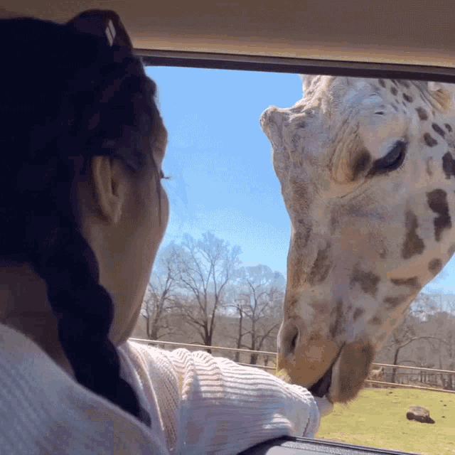

GIRAFFES
Graceful and tall, giraffes are the tallest land animals and use their long necks to reach leaves from treetops. Their gentle nature and social behavior make them fascinating to observe...
Explore the giraffe zone to learn about their unique physiology and social interactions. Discover how conservationists protect them in the wild through habitat preservation and education...
WHERE WILL YOU FIND THEM
You will find the giraffes at pen G18, near the baobab grove.